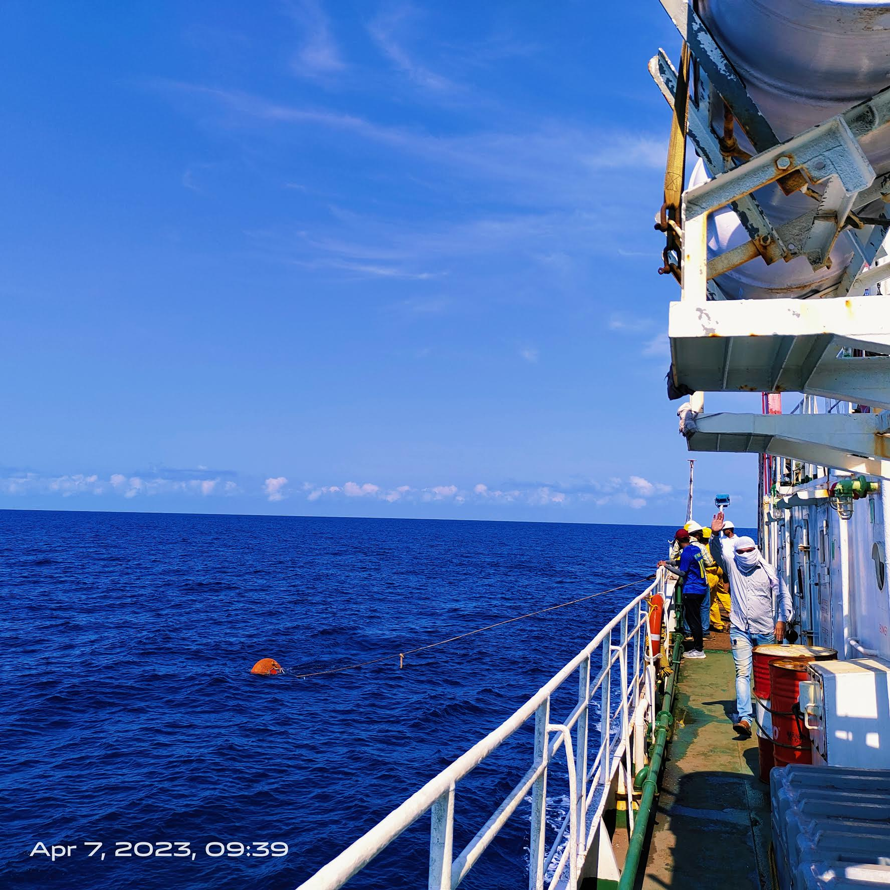
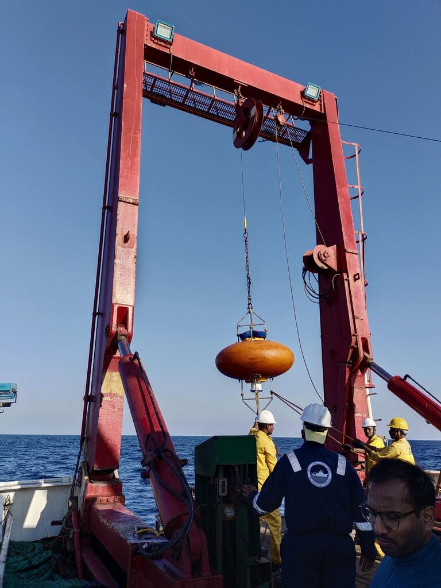
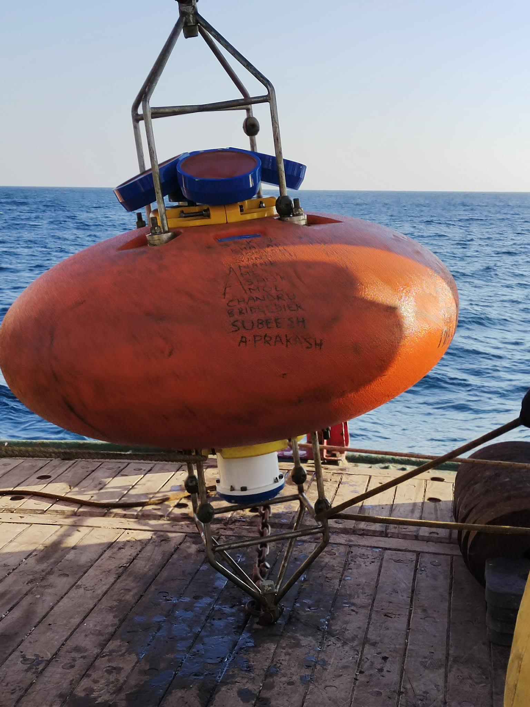
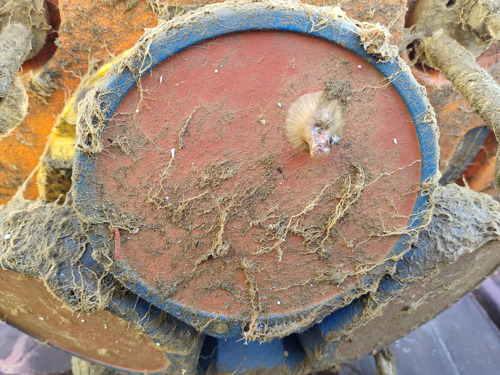
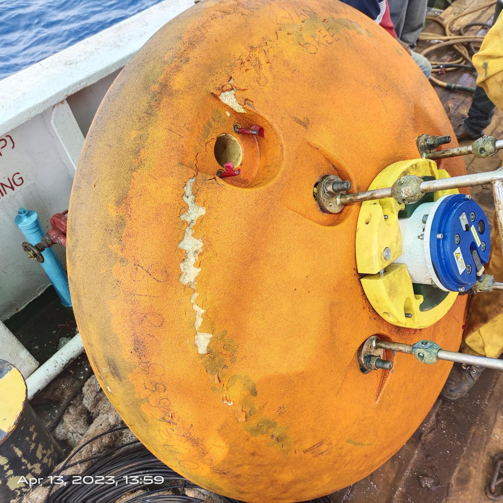
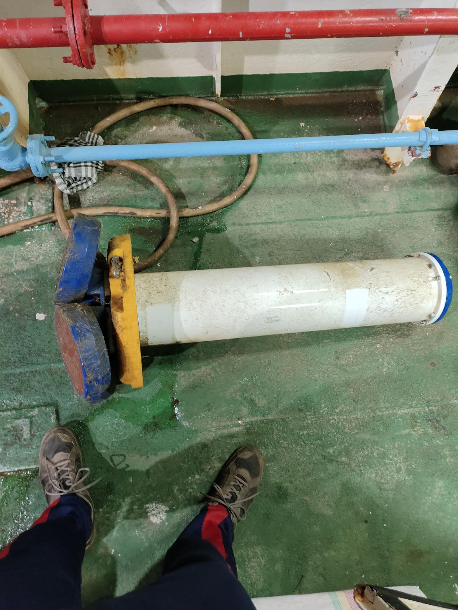
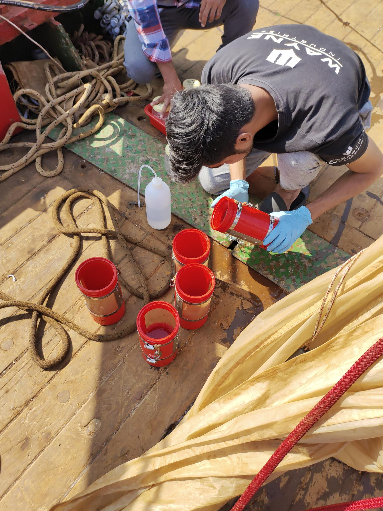

About
I am a physical oceanographer with six years of research experience analysing large observational and model datasets. My doctoral research quantifies zooplankton variability, from intraseasonal to interannual timescales, and its physical drivers, using more than a decade of moored ADCP records together with satellite and model products across the Indian seas.
I build reproducible, version-controlled and tested workflows in Python, and I enjoy comparing and reconciling multiple observational datasets and evaluating model output. I am interested in applying this to climate prediction and climate services, including decadal prediction, forecast evaluation, and turning climate information into products for decision-making.
I am based in Dona Paula, Goa. Outside work I play classical guitar and badminton, and I enjoy linguistics and history.
Experience
Senior Project Associate
Senior Research Fellow
- Studied zooplankton variability using long-term ADCP backscatter records
- Built a Python pipeline for backscatter–biomass validation and decade-long ADCP processing
Junior Research Fellow
- Studied sea level and currents in the Indo-Sri Lanka Channel
- Analysed recording current meter data (Sethusamudram Project) with satellite and model data
Research Intern
Research Intern
Education
Ph.D., Physical Science (Oceanography)
M.Sc., Ocean and Atmospheric Sciences
B.Sc., Physics
Skills
- Programming: Python (NumPy, Pandas, Xarray, Dask, statsmodels), Shell, Fortran, MATLAB
- Analysis: time-series and spectral analysis, EOF/PCA, filtering, statistical validation
- Workflows: Git, Docker, HPC deployment, ESMValTool, CDO
- Modelling: LCS ocean model, ROMS
- Languages: Odia (native), English (C2), Hindi (C1)
Research
My work connects ocean physics to the organisms that live in it. I use acoustic backscatter from moored current profilers as an indicator of zooplankton biomass, and ask what sets its variability.
Zooplankton variability
Intraseasonal to interannual variability of zooplankton biomass and standing stock from ADCP backscatter in the eastern Arabian Sea and the western Bay of Bengal.
Coastal and boundary currents
Sea level, transport and tides in the Indo-Sri Lanka Channel, and the role of remote forcing.
Reproducible data pipelines
Automated, tested processing of decade-long ADCP records, and validation of backscatter against biomass.
Thesis: Variability of zooplankton biomass and standing stock inferred from ADCP backscatter in the seas around India. Supervisors: Dr. D. Shankar and Dr. P. Amol.
Cruise experiences
Eastern Arabian Sea
Western Bay of Bengal
See the gallery for photographs from these cruises.
Teaching & Service
Community service
I build and maintain NEJI, the Network of Earth-Science Jobs, India, a community resource for opportunities in the Earth sciences.
Conference organisation
- Organised the Samudramanthan conference
- Organised the SOLAS conference, CSIR-NIO
Outreach
- Royal Society of Chemistry, Yusuf Hamied Chemistry Camp
- Exhibition and outreach programmes at CSIR-NIO, every year on 1 January and 26 September, where I love explaining our instruments to curious children
Awards
- Best Poster Award, NCPS 2025
- CSIR-NET/JRF, 2019
Workshops
- PyADPS, INCOIS (2025)
- IoPredict, INCOIS (2024)
- Data Science Training Program, CSIR-4Pi (2023)
- The Joy of Computing with Python, NPTEL (2021)
Conferences
- WOSC-26, CSIR-NIO (2026)
- IIOSC-25, INCOIS, Hyderabad (2025)
- NCPS-25, NCPOR, Goa (2025)
- OSICON-25, CSIR-NIO (2025)
- COSMOS-24, NPOL, DRDO (2024)
- WOSC-24, NIOT, Chennai (2024)
- OSICON-23, INCOIS, Hyderabad (2023)
Membership
- ASLO – Member
- IMS – Life member
- OSI – Member
Publications
Intraseasonal to interannual variability of zooplankton biomass and standing stock inferred from ADCP backscatter in the western Bay of Bengal. Journal of Marine Systems.
NEJI: building a community-owned network for Earth-science opportunities in India. Limnology and Oceanography Bulletin.
Gallery








